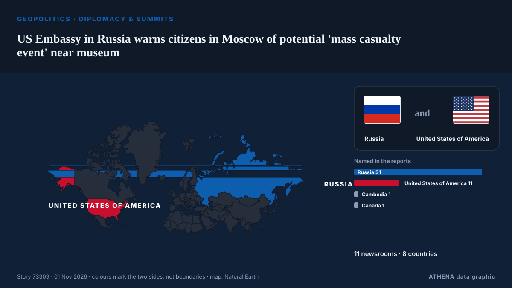

Дипломатия и саммиты
| 19 окт. | 0 |
|---|---|
| 20 окт. | 0 |
| 21 окт. | 2 |
| 22 окт. | 0 |
| 23 окт. | 1 |
| 24 окт. | 0 |
| 25 окт. | 0 |
| 26 окт. | 4 |
| 27 окт. | 1 |
| 28 окт. | 5 |
| 29 окт. | 2 |
| 30 окт. | 7 |
| 31 окт. | 2 |
| 1 нояб. | 0 |
Заголовки приводятся на английском языке, как они были опубликованы.

US Embassy in Russia warns citizens in Moscow of potential 'mass casualty event' near museum
"The US Embassy in Moscow is aware of a credible threat of a mass casualty event TODAY, October 31, at the Tsaritsyno Museum Reserve in Moscow," the embassy wrote. из The Jerusalem Post
Erdogan, Zelensky talk Black Sea Grain Corridor
Turkish President Recep Tayyip Erdogan and Ukrainian President Volodymyr Zelensky agreed on Saturday to continue work on the Black Sea Grain Corridor, aimed at enabling grain shipments from Ukraine. из AzerNews
Rubio says US yet to decide on new Iran strikes
ATLANTA: US President Donald Trump has not made a decision about fresh strikes on Iran amid stalled peace talks, US Secretary of State Marco Rubio said Saturday. из Business Recorder
Russian foreign minister Lavrov arrives in US for G20 meeting
Russian Foreign Minister Sergey Lavrov has arrived in the US to attend a G20 meeting in Atlanta amid global tensions on various issues. из Arab News
Aid operation and evacuations in Oleshky amid brief truce agreed to by Russia and Ukraine
A humanitarian mission entered the devastated city of Oleshky on Friday, officials said, as Russia and Ukraine observed the most significant truce of the 4½-year war that began with Moscow's… из PBS NewsHour World
Nations commit to get nature goals back on track
Nearly 200 nations struck hard-fought agreements Friday at a U.N. biodiversity summit, but the outcome was accompanied by disappointment over missed opportunities to address humanity's destructive… из Phys.org
Qatari Mediators Return to Tehran in Push for US-Iran Peace Deal
Qatari mediators returned to Tehran on Friday to advance efforts for a US-Iran agreement, but disagreements over nuclear negotiations, oil sanctions and a US port blockade continue to obstruct a… из Khaama Press
Starved residents of Russian-occupied Oleshky return to Ukraine during a rare local ceasefire
The six-day ceasefire was reached after mediation efforts by US first lady Melania Trump and with the pope’s help. из The Straits Times
Oil jumps 2%, settles at 6-month highs on fears of escalation in Iran
Oil prices jumped more than 2 percent on Friday and settled at their highest levels since the end of April, as traders braced for a potential escalation in the Iran war after the U.S. midterm… из The Korea Times
Trump reverses decision to cancel Kansas and Iowa rallies before midterms
The president cancelled the events in favor of tele-rallies, as Republicans face a fight to retain control of Congress Donald Trump cancelled, and then promptly uncancelled, two in-person rallies in… из The Guardian
Vance outreach to Iran related to medical supplies, says Trump
Oct 29 - US President Donald Trump said that Vice President JD Vance's outreach to Iran was about helping the country get medical supplies, after US media reported Vance had written to Tehran's top… из The Straits Times
EU considering Canada as ‘associate member’, Ursula von der Leyen says, despite internal opposition
The European Commission president was speaking at a Canada-EU summit in Montreal. из The Straits Times
N. Korea appears to test propaganda loudspeakers along border
SEOUL, Oct. 29 (Yonhap) -- North Korea appears to have conducted a test broadcas... из Yonhap (English)
Trump says Zelensky and Putin will meet “very soon”
U.S. President Donald Trump stated that a meeting between Ukrainian President Volodymyr Zelensky and Russian leader Vladimir Putin is expected to take place soon. из Ukrinform (English)
Norwegian prime minister denies Putin lectured him and Finnish president on medieval Slavs during call
Finnish President Alexander Stubb and Norwegian Prime Minister Jonas Gahr Støre spoke to Vladimir Putin about Russia’s war against Ukraine and diplomatic efforts to end it, after consulting Kyiv. из Ukrainska Pravda (English)
Russia woos African leaders at Moscow summit
Moscow seeks to strengthen ties with countries it sees as 'natural allies' against the West amid heavy sanctions over its Ukraine offensive. из Free Malaysia Today
Norway trolls Trump with toilet joke after his Nobel Prize meltdown
Norway’s tourist board hit back at the US president’s tantrum over not being awarded the Nobel Prize. из The Independent
Ushakov: Date of trilateral talks depends on Kyiv's actions
Russian President Vladimir Putin's Foreign Policy Assistant Yury Ushakov (pictured) said on Thursday that the timing of trilateral negotiations between the United States, Russia and Ukraine depends… из AzerNews
Ethiopia Welcomes UAE Candidate Lana Nusseibeh for UN Secretary-General Post
UAE Minister of State Lana Nusseibeh has entered the race to become the next UN secretary general. из The National